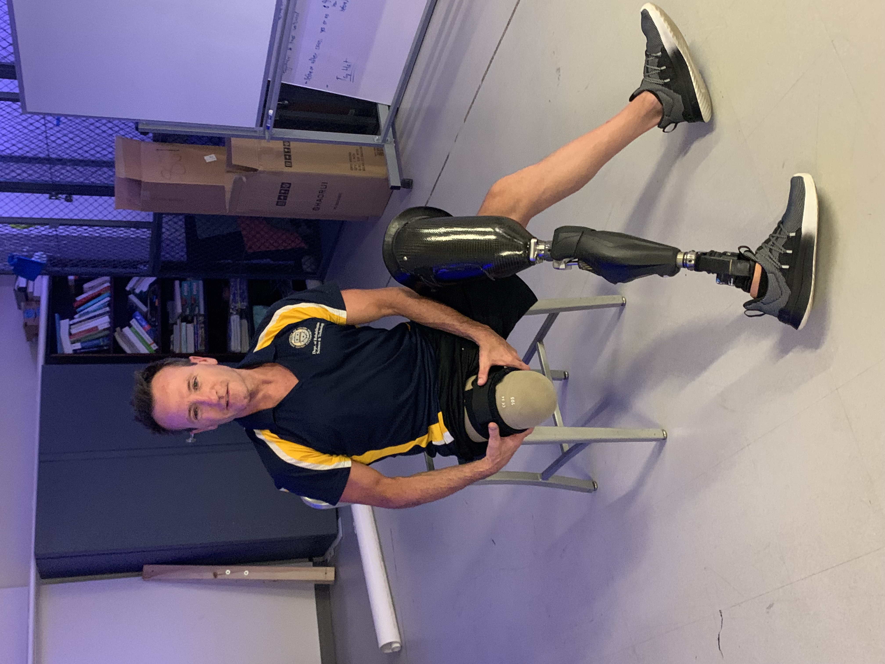

Vibration Band to Mitigate Phantom Limb Pain
Phantom limb pain is a sudden, painful sensation experienced by many who have had a limb or part of a limb surgically removed. For amputees, these episodes can be both sporadic and can vary in discomfort. Due to a nervous system anomaly, the severed nerves relay signals to the brain, often interpreted as pain.
As a researcher for XProjects, my task was to develop a device to mitigate phantom limb pain for amputees. After researching ways that amputees currently address their phantom pain issues, my team and I discovered that vibration therapy can be used to mitigate phantom pains once they arrive.
I theorized that a small device that could fit between a prosthetic socket and liner, such as a thin band, that vibrated and could be remotely controlled could be used by amputees to alleviate their phantom limb pain. I created a simple prototype to show the rest of the team.
After concluding this was the design we would move forward with, we began testing with new materials and stronger vibration motors. I also drew a schematic to facilitate manufacturing.

Our final design incorporated a sleeve filled with vibration motors that could be activated using a switch. The vibration motors were all powered using a rechargeable lithium polymer battery.
Our collaborator, John Siciliano, is shown in the photo below with our band prototype above his prosthetic liner.

I also collaborated with Dr. Goeran Fiedler to design a prosthetic socket that could accommodate the larger size of the final prototype, which wouldn't fit into a conventional socket. We were able to create a prosthetic socket which had a pocket of space for the vibration band to sit.
This project provided invaluable experience in medical device development, from initial concept to final functional prototype. The skills gained in collaborative design and problem-solving will be crucial for future engineering challenges.